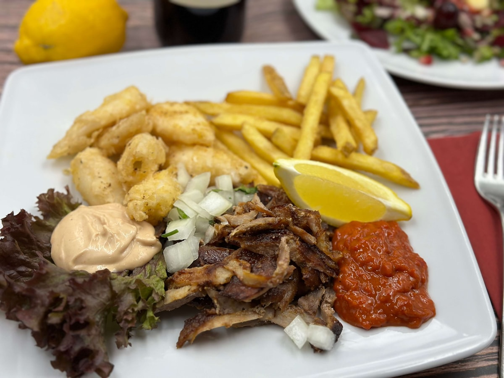
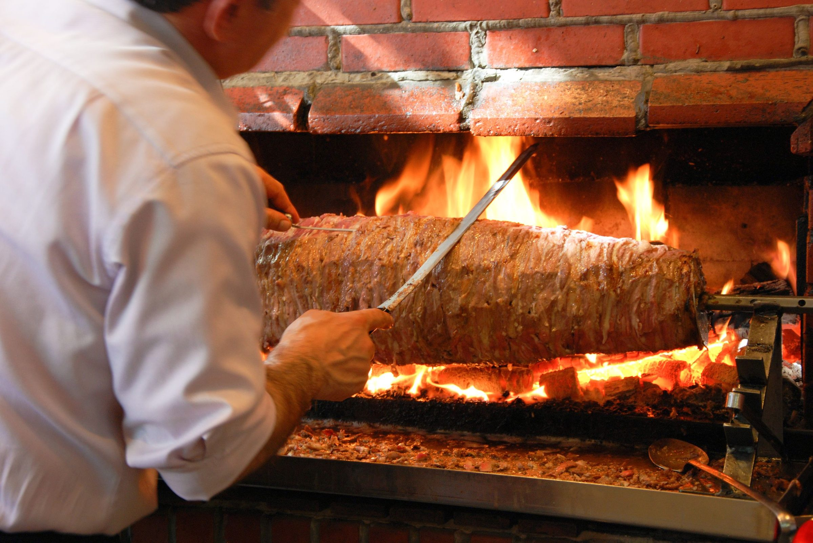
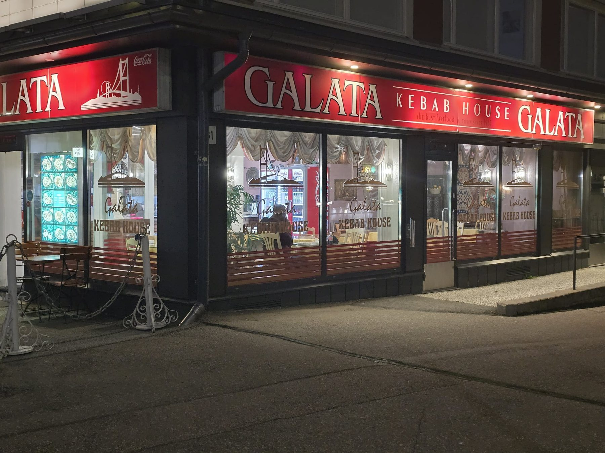
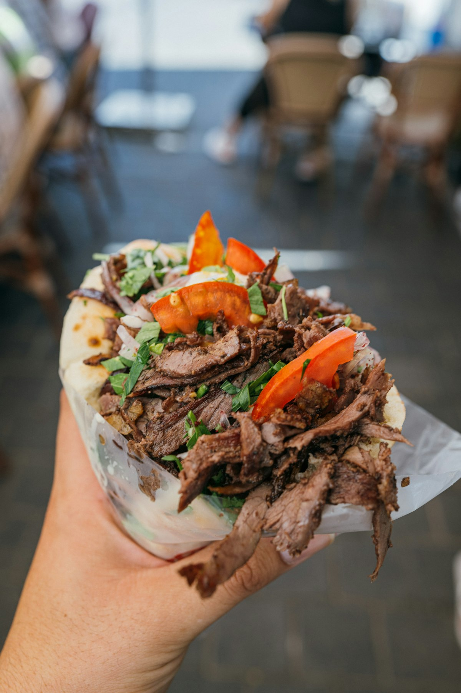
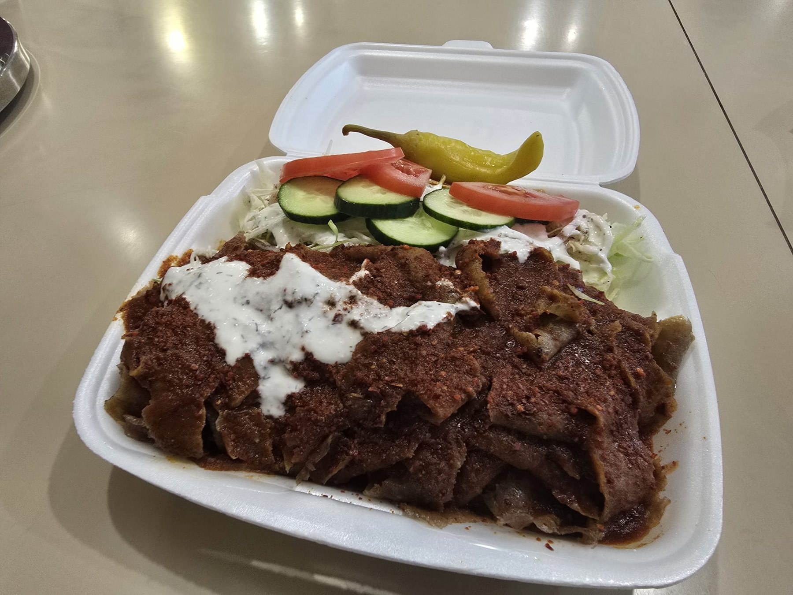

Döner kebab
13,00 €Annokset · dönerista leikattua kebablihaa, salaatti ja talon kastikkeet.

Tampereen vanhin kebab-ravintola · vuodesta 1985

Tarina
Galata Kebab House on toiminut Tampereella vuodesta 1985. Olemme Tampereen ensimmäinen turkkilainen kebab-ravintola ja yksi kaupungin kebab-kulttuurin pioneereista – asiakkaitamme olemme palvelleet jo yli 40 vuoden ajan.
Aloitimme joulukuussa 1985 Anttilan takana olevalla kadulla nimellä Istanbul, ja sieltä muutimme nykyisiin tiloihimme Näsilinnankadulle. Nimi vaihtui ensin Bosporiksi ja lopulta Galataksi. Nyt ravintolaa pyörittää toinen sukupolvi, ja kolmas on mukana töissä koulujen lomilla.
Kebabliha marinoidaan talossa ja paistetaan pystydönerinä — ei valmiiksi lämmitettynä, vaan veitsellä leikaten sitä mukaa kun tilaus tulee.

Annokset · dönerista leikattua kebablihaa, salaatti ja talon kastikkeet.

Galata Special · talon neljän pippurin kermakastike, ranskalaiset tai riisi.

Rullat · ohutleivän sisällä kebabliha, salaatti ja kastikkeet.

Hot Wings · kastikkeet medium, hot ja X-hot.
Juomat · virvoitusjuomat, I-olut, kahvi ja turkkilainen tee.

Döner
Döner pyörii grillin edessä koko päivän. Liha leikataan veitsellä vasta kun tilaus tulee, joten annos lähtee keittiöstä kuumana eikä odota lämpöhauteessa.
Galleria


Aukioloajat
| Maanantai | 10.30–23.00 |
| Tiistai | 10.30–23.00 |
| Keskiviikko | 10.30–23.00 |
| Torstai | 10.30–23.00 |
| Perjantai | 10.30–16.30 |
| Lauantai | 10.30–16.30 |
| Sunnuntai | 11.00–23.00 |
Palautetta
Tampereen paras kebab.
Otimme falafel pitat, jotka olivat kyllä varmaankin parhaimmat mitä tähän asti olen vastaavia syönyt.
Hyvä ruoka ja ystävällinen henkilökunta.
Herkullinen turkkilainen kebab-ruoka täällä :) tule maistamaan
Siisti paikka, ystävällinen henkilökunta ja erinomainen pitakebab.
Jätä arvio
Kerro miten meni. Palaute menee suoraan keittiöön — ja jos annos oli hyvä, me arvostamme kovasti myös tähtiä Googlessa.
Arvioi Googlessa ↗Kiitos arviostasi!
Palaute meni keittiöön. Jos haluat, kopioimme tekstisi valmiiksi ja viemme sinut Googleen — siellä arvio näkyy myös muille. Arvion kirjoitat ja julkaiset itse.